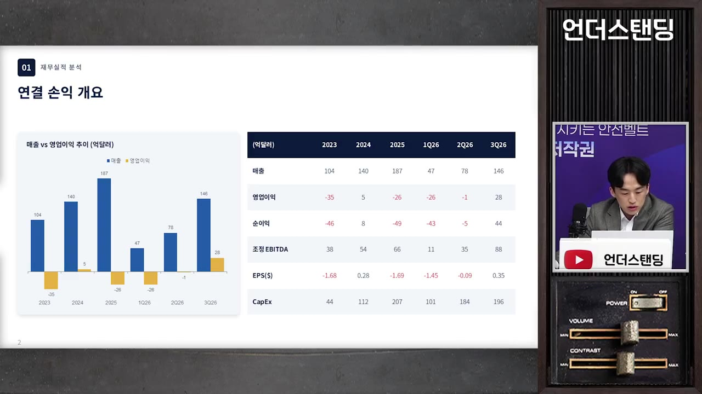
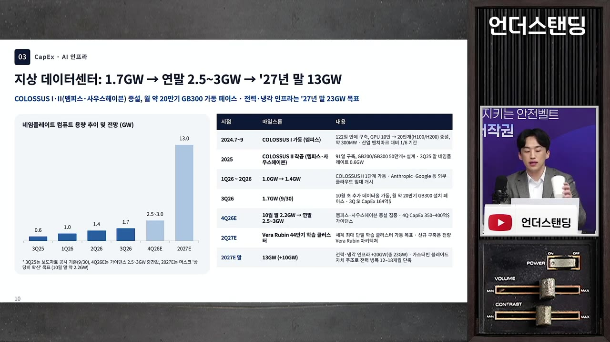

민주당이 장악한 텍사스. 테슬라·스페이스X 합병 특별위원회 가동. 한국 주주들 '양도세 폭탄' 논란 (유진투자증권 정의훈 연구원)
▶ 원본 영상 보기한눈에 보기
- 스페이스X 3분기 매출은 AI(클라우드) 부문이 전년 대비 800% 늘어 전체의 52%를 차지했고, 영업이익도 큰 폭의 흑자로 돌아섰다(발표자 분석).
- 스타링크는 가입자 1,360만 명, 미국 정부의 지상통신 주파수 허가로 휴대폰 직접 연결 이동통신 사업자로 확장할 가능성이 커졌다.
- 텍사스 주지사가 민주당으로 바뀌었지만 발사 승인은 연방(FAA) 소관이라 영향이 작고, 발사장 확대(공원 매입)와 데이터센터 환경 승인이 리스크로 꼽혔다.
- 테슬라와의 합병은 특별위원회 구성으로 사실상 착수 단계이며, 주식 교환 방식이면 국내 테슬라 투자자에게 양도세가 부과될 가능성이 높다.
- 발표자는 스페이스X가 장기 분할매수 대상이지만, 락업 해제(12월)·AI 변동성·합병 이슈가 정리될 때까지 지금은 매수 적기가 아니라고 본다.
이런 분께 도움이 됩니다
- 스페이스X·테슬라 투자자, 특히 합병 시 세금 문제를 걱정하는 국내 주주.
- 3분기 실적의 핵심(AI 클라우드 전환, 스타링크, 설비투자)을 빠르게 파악하고 싶은 분.
핵심 내용
3분기 실적: AI가 매출의 절반
- 분기 매출은 거의 전분기의 두 배 가까이 늘었고, 이번 분기 매출이 2024년 연간 매출 수준이다. 영업이익은 단순 흑자전환이 아니라 큰 규모의 흑자다. (3:21)
- 스타링크 마진율은 지난해 연간 39%에서 3분기 45%로 상승, 매출은 전년 대비 70% 증가.
- AI(SI, 슈퍼 인텔리전스로 명칭 변경) 매출은 전년 대비 800%, 전분기 대비 200% 증가해 매출 비중 52%.
- AI 매출의 실체는 AI 서비스(그록)가 아니라 클라우드 임대(데이터센터 컴퓨팅 빌려주기)다. (5:21)
- 보고서 역산 결과, 신규 최대 고객은 엔트로픽으로 추정되며 분기 매출 약 50억 달러(전체 150억 달러의 3분의 1)가 반영됐다. 발표자의 역산 추정이다. (19:25)
- 4분기에는 구글이 월 9억 달러(분기 27억 달러) 계약으로 들어올 예정이라 매출이 더 커질 전망.
💡 단기 실적을 좌우하는 변수는 이제 우주가 아니라 AI 클라우드다.

스타링크: 안테나에서 휴대폰 직결로
- 가입자는 지난해 말 890만 명에서 3분기 1,360만 명으로 증가, 연말 1,500~1,600만 명 예상. (5:52)
- 미국 정부가 지상통신 주파수를 허가해 사실상 '제4 이동통신사' 자격을 부여했고, 허가 직후 미국 통신 3사 주가가 하락했다. (7:13)
- 안테나 없이 휴대폰에 직접 연결하려면 지상통신 주파수가 필요한데, 지금까지는 없어서 통신사와 경쟁이 안 됐다.
- 실제 서비스에는 새 위성을 쏴야 해서 시간이 걸린다.
- 발표자는 도심에는 기지국도 설치할 것으로 추측하며(본인 추측), 장기적으로 가입자가 억 단위가 될 수 있다고 본다. (10:29)
- 가입자당 매출(ARPU)은 줄어드는 추세였으나 북미·유럽 요금 인상으로 반등했다. 국가별로 가격을 다르게 책정한다.
AI 데이터센터 전략
- 코어위브·네비우스 같은 네오클라우드는 임대 목적이지만, 스페이스X는 그록이 있어 '실거주 수요'도 있다는 차이가 있다. (12:47)
- 계약 구조: 2년 계약에 상호 3개월 전 통지 시 해지 가능, 대신 단가(ASP)를 높게 받는다. (13:40)
- 장점은 높은 매출·이익률, 단점은 AI 투자가 꺾이면 가장 먼저 공실이 날 수 있다는 점.
- 머스크는 "AI는 무조건 된다"고 보고, 나가면 그록으로 쓰면 된다는 입장으로 해석된다(발표자 해석).
- 발표자의 가설: 지금은 돈이 없어 임대로 데이터센터를 늘리고, 나중에 자체 AI에 쓰는 구조. 현재 그록은 클로드·챗GPT·제미나이보다 뒤처졌지만 데이터센터만 확보하면 따라잡는다는 판단으로 보인다. (17:03)
- 설비투자(캡엑스): 2분기 184억 달러, 3분기 196억 달러, 4분기 가이던스 350~400억 달러로 상향.
- 데이터센터 규모는 연초 1기가와트(GW) → 3분기 1.7GW → 연말 2.55GW 목표, 내년 말 13GW 목표(머스크 발언, 발표자는 "두고 볼 일").

중간선거와 텍사스 리스크
- 민주당이 텍사스 주지사를 가져갔고, 머스크는 선거에 6천억~7천억 원가량을 쓴 뒤 불편한 심기를 드러냈다. 발표자는 감정과 실제 영향은 별개라며 5대 리스크(발사·데이터센터·테라팹·합병·정부 수주) 중 발사와 데이터센터만 다뤘다. (23:00)
- 발사: 승인은 연방기관 FAA 소관이라 주지사와 무관. 스타십은 텍사스 스타베이스에서 발사되므로 상용화되면 텍사스 발사 비중이 커진다. (27:02)
- 도로 통제 권한을 위해 스타베이스를 시(市)로 승격해 리스크를 줄였다.
- 다만 발사장 확장용 보카치카 공원 땅 매입 절차를 신임 주지사가 중단 명령했다. (31:29)
- 데이터센터: 스타베이스 건설은 이미 진행 중이라 영향이 작지만, 자체 가스터빈 발전은 환경 승인에서 태클이 걸릴 수 있다. 주력 데이터센터는 공화당 지역인 테네시 멤피스이며, 테네시가 가스터빈에 반대하자 옆 미시시피주에 지었다.
💡 발표자 결론: 모라토리엄 등 규제 영향은 받겠지만 네오클라우드보다는 피할 여지가 크다.
테슬라 합병: 사실상 착수
- 특별위원회는 머스크가 빠진 위원회이나, 머스크 지분율 40% 초과·지배력 80% 초과라 사실상 "하겠다"는 선언으로 해석된다. (37:21)
- 시점: 트럼프 임기 내 종결 필요성 때문에 미국 현지는 내년 상반기 시도 가능성을 절반 이상으로 본다. 12월 테슬라 주총 안건에는 포함되지 않아 임시 주총이 필요하다. (38:19)
- 걸림돌: 스페이스X는 방산 연관 기업인데 테슬라는 중국 노출도가 커서 정부 승인 리스크가 있다. (39:44)
| 구분 | 찬성론 (주로 회사 측) | 회의론 (주로 투자자) |
|---|---|---|
| 논리 | AI 칩(테슬라)·로봇·데이터센터·그록 수직통합, 재무 보완, S&P 500 조기 편입, 머스크 시간 배분·충성 의무 소송 완화 | 이미 협력 중이라 합병 시너지 불명, 테슬라 주주에 프리미엄 필요 |
| 문제 | — | 테슬라는 전체 주식 수 기준 과반 찬성 필요(기권=반대), 프리미엄 지급 시 희석, 성장 둔화 테슬라 때문에 스페이스X 밸류에이션 훼손, 솔라시티·X·xAI 때처럼 머스크 개인 이해충돌 |
- 발표자는 프리미엄 20~25%를 유력하게 보며, 합병 후 합산 시가총액만 유지돼도 다행이라고 말한다.
한국 투자자의 양도세 쟁점
- 유력한 방식은 스페이스X가 신주를 발행해 테슬라 주식과 교환하는 주식 교환이며, 이 경우 현금을 받지 않아도 양도로 보아 과세될 가능성이 높다. 매수청구권을 써도 마찬가지. (40:48)
- 합병 방식이 확정되지 않아 지금은 공식 논의가 없지만, 추진되면 뒤늦게 크게 불거질 것으로 발표자는 예상한다.
투자 판단 (발표자 의견)
기억할 숫자·인용
- AI 매출 전년 대비 +800%, 매출 비중 52% / 스타링크 매출 +70%, 마진율 39%→45%
- 가입자 890만 → 1,360만 (연말 1,500~1,600만 예상)
- 엔트로픽 분기 매출 약 50억 달러(추정) / 4분기 구글 분기 약 27억 달러 예정
- 캡엑스 4분기 가이던스 350~400억 달러 / 데이터센터 1GW → 1.7GW → 연말 2.55GW
- 합병 프리미엄 시나리오 20~25%, 테슬라 승인은 전체 주식 수의 과반 필요
생각해볼 점
- 영상의 엔트로픽·구글 매출은 공시를 발표자가 역산한 추정이므로 원 보고서로 확인이 필요하다. (내 의견)
- 합병 방식·프리미엄·양도세 과세 여부는 모두 미확정이고, 과세 결론도 합병 방식과 세법 해석에 따라 달라진다. 세무 전문가 확인이 필요하다.
- "AI는 돈만 들이면 따라잡는다"는 머스크의 전제가 틀리면 높은 단가 계약과 400억 달러 투자가 부담이 된다는 점은 영상에서도 암시된다.
- 발표자는 합병 쪽 반대 논리를 뒤에 설명하는 등 회의적인 쪽에 기운 느낌이 있어, 찬성 측 시너지(진행자 언급)도 함께 볼 필요가 있다.
바로 해볼 일
- 테슬라 보유자는 합병 방식(주식 교환 여부)과 해외주식 양도세 규정을 증권사·세무 전문가에게 미리 확인하기
- 스페이스X 4분기 캡엑스 가이던스와 12월 락업 해제 일정을 메모해 두고 매수 판단 시점 점검하기
- 테슬라 임시 주총 공고가 나오는지 추적하기